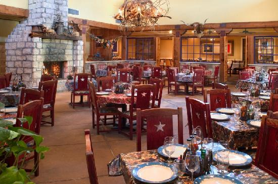
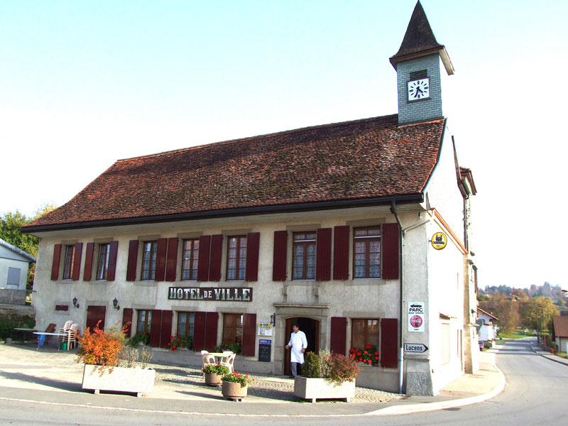
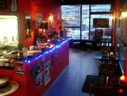
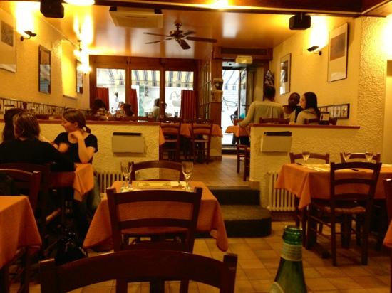
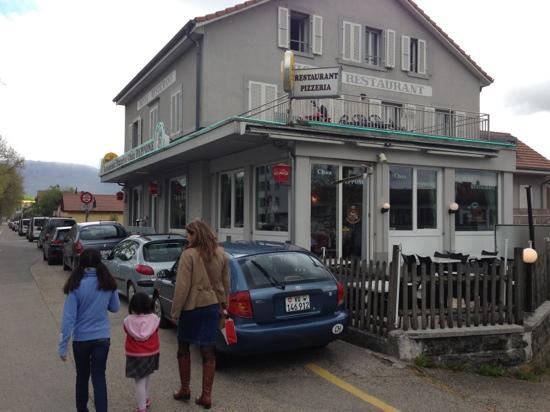

5 - Très bon

Pâtes aux crevettes assez quelconques, filets de perches normaux. La viande est par contre très bonne et la cuisson est respectée et impeccable. Prix corrects.
5 - Très bon

Très bien servi
Inovateur
6 - Excellent

Des supers bon Burgers!
Le Sergent Jack Pepper est excellent, je vous le recommande
Bon, original, bonne ambiance.
4 - Bon

Une bonne revisite pour notre soirée spéciale pour le garçon. Les pizza sont magnifiques, le bienvenue chaleureux comme le feu de bois et la tiramisu était une merveille
3 - Moyen

Les pizzas sont très bonnes, l'ambiance et le service sympathique.
Excellent resto, mais prevoir une couverture si vous mangez pres d'une fenetre. Mal isole! A eviter en hiver